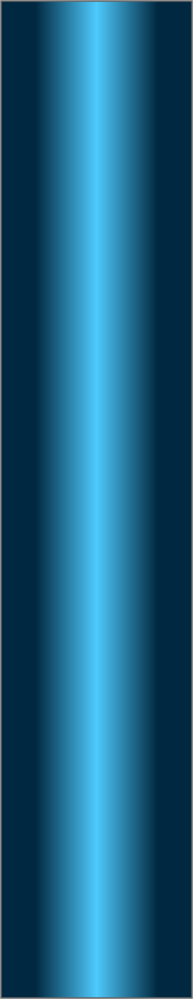
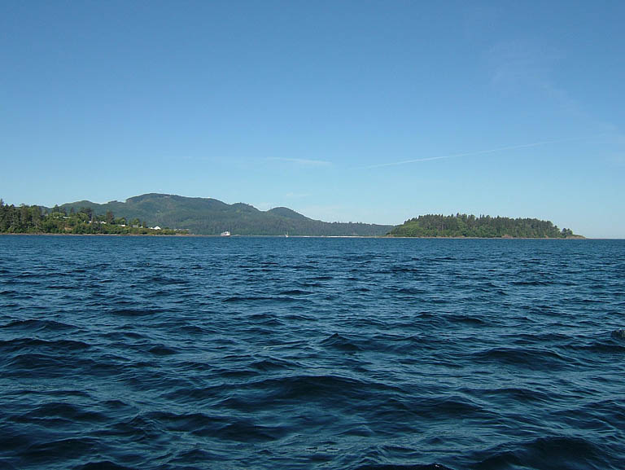
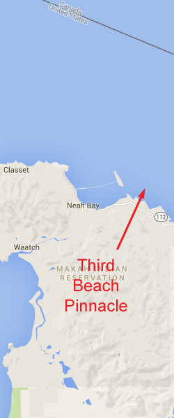
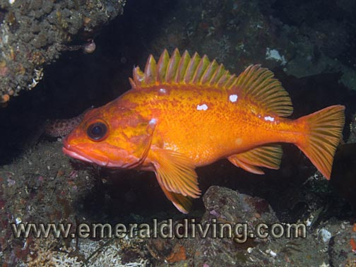
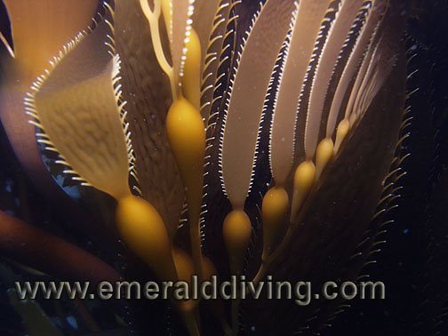
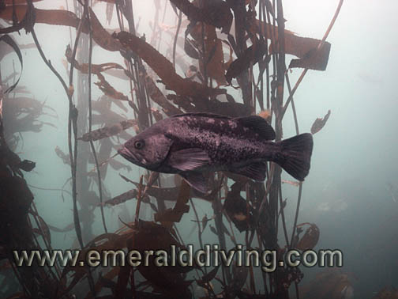
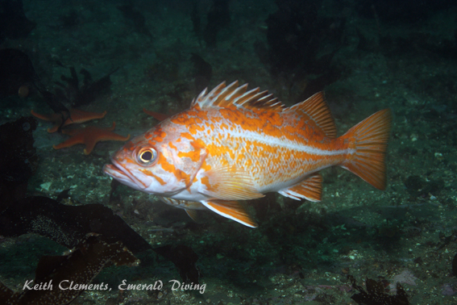
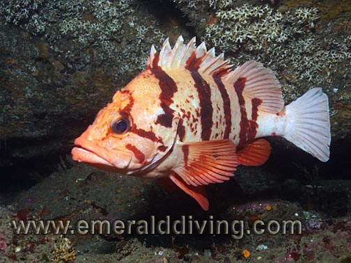
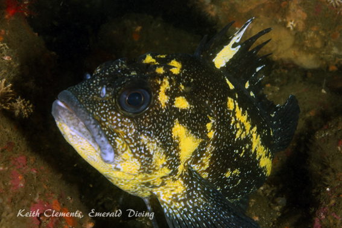

Double click to edit

Third Beach Pinnacle
Topography: Extensive 20-30 foot high rocky ridge and accompanying rock formations situated on a broken shell substrate.
Cape Flattery marine life rating: 5
Cape Flattery structure rating: 5
Highlight: Excellent rockfish encounters with schooling black, blue (deacon), canary, and yellowtail rockfish. Opportunity to see a rosy rockfish.
Typical diving depth: 70-75 feet
Skill level: Advanced
GPS coordinates: N48° 22.472’ W124° 34.316’
Access by boat: This pinnacle is another of the many ridge formations in this area. It is located east of the entrance to Neah Bay. The pinnacle is offshore but comes within about 20 feet of the surface. An extensive kelp bed attached to the top of the shallow part of the pinnacle shows on the surface at slack tide. If the kelp is not showing on the surface, I often see it fluttering in the current 5 to 10 feet below the surface. As a last resort I use the depth sounder to find the 30 foot drop associated with this ridge on the inside of the pinnacle. The ridge runs parallel to shore in an east-west direction.
Shore access: None
Dive profile: I sometimes anchor my boat on the top of the shallow section of the reef when diving this site. My dive plan calls for a down and back pattern, so with any luck I will end up back at the anchor line to end my dive. I always leave someone in the boat just in case a diver cannot make it back to the entry point and needs picked up.
My dive profile for this site is straight forward. I simply follow the kelp to the bottom and head south over the ridge. Any current running over the top of the reef quickly dissipates once I get behind the ridge. I follow the base of the ridge to the west until I hit my turn point. I then fin back along the upper portion of the ridge. Current at this site almost always heads west and makes the return trip a bit more effort. I end my dive back at the shallow part of the reef where I hang onto some bull kelp to fulfill my safety stop obligation. I carry a signal marker buoy and finger spool in case I have to perform a free ascent from a deeper section of the reef.
This is my favorite ridge in the Cape Flattery area. Tall walls, extensive boulder fields, small caves, and protruding ledges all harbor interesting marine life. A wall and extensive boulder field lie immediately below the kelp bed marking the shallow section of the reef. The dense boulder field gives way to lone large boulders and isolated rock formations as it follows the ridge to the west. A white broken shell substrate meets the base of the ridge.
The top of the ridge gets much deeper to the west. The ridge at times diminishes to only 10 feet tall before increasing in height again. I run to the west for about 30 minutes and end up in about 75 feet of water with the ridge tops at about 60 feet before I turn around.
My preferred gas mix: EAN 38
Current information:
Current station: Stait of Juan de Fuca (Entrance)
Noted slack corrections: None
Slack current at this site does not coincide with predicted slack for the Strait of Juan de Fuca entrance. I have not been able to establish any pattern to slack. On several occasions slack has actually occurred at predicted maximum current for the Strait of Juan de Fuca entrance.
The current gauge I rely on is the kelp on top of the reef. I like to enter the water to begin my dive just as the current begins to subside and the kelp starts to show on the surface. By the time I finish my dive an hour later, the current has totally subsided and the kelp is on the surface in mass. I can then leisurely finish my dive in the kelp with the rockfish as I perform my safety stop.
The reef does a good job of shielding the south side of the ridge from intense current. A mild westbound current almost always runs along this ridge during both flooding and ebbing tides. Although the current is not strong, it must be factored into the dive plan if the intent is to run a down and back dive plan.
Boat launch:
• Neah Bay Marina ramp. Approximately 2 miles from the dive site.
Facilities: None
Hazards:
Current: The north side and top of the reef are subjected to heavy current. A mild westbound current is almost always present along the south side of the ridge.
Free ascent: A free ascent is necessary if a diver does not make it back to the shallow section of the ridge.
Snagging hazard: Discarded fishing tackle, fishing line, and hooks are found throughout this site.
Exposure: Third Beach is an offshore location with no nearby shore to swim to in an emergency. Wind and weather from any direction adversely affect surface water conditions.
Swell: This site is about 7 miles down the Strait of Juan de Fuca but can be plagued by swell of three feet or more.
Marine Life: The variety and amount of marine life I find at this site never ceases to leave me in awe. Even the very top of this pinnacle is lined with gorgeous macrocystis kelp that rockfish use for cover when the current above the reef lets up. I often find wolfeel in the open and giant Pacific octopus. I have encountered a number of giant Pacific octopus resting on shelves along the ridge. Grey puffball sponges, western aggregate sponges, purple-ring topsnails, and huge urticina anemones are bountiful. This is one of the few sites that I often note the occasional orange peel nudibranch. A careful eye will also note an abundance of tiny mosshead warbonnets.
The rockfish encounters at this site are among the best. Schooling blue, black, and yellowtail rockfish often hover at the top of the wall just out of the current waiting for a meal to drift buy. The rockfish leisurely meander throughout the kelp bed above the reef at slack. China, tiger, copper, canary, vermilion, Puget Sound, juvenile yelloweye, and quillback rockfish are all found throughout this area. One species that makes this site unique is the rosy rockfish. Several of these orange, pink, and white fish are residents of this reef. I don’t find these shy inhabitants on every dive, but when I do they are usually close to the base of the ridge in about 70 feet of water. Getting to see this colorful offshore species in divable waters is truly special.
Cape Flattery marine life rating: 5
Cape Flattery structure rating: 5
Highlight: Excellent rockfish encounters with schooling black, blue (deacon), canary, and yellowtail rockfish. Opportunity to see a rosy rockfish.
Typical diving depth: 70-75 feet
Skill level: Advanced
GPS coordinates: N48° 22.472’ W124° 34.316’
Access by boat: This pinnacle is another of the many ridge formations in this area. It is located east of the entrance to Neah Bay. The pinnacle is offshore but comes within about 20 feet of the surface. An extensive kelp bed attached to the top of the shallow part of the pinnacle shows on the surface at slack tide. If the kelp is not showing on the surface, I often see it fluttering in the current 5 to 10 feet below the surface. As a last resort I use the depth sounder to find the 30 foot drop associated with this ridge on the inside of the pinnacle. The ridge runs parallel to shore in an east-west direction.
Shore access: None
Dive profile: I sometimes anchor my boat on the top of the shallow section of the reef when diving this site. My dive plan calls for a down and back pattern, so with any luck I will end up back at the anchor line to end my dive. I always leave someone in the boat just in case a diver cannot make it back to the entry point and needs picked up.
My dive profile for this site is straight forward. I simply follow the kelp to the bottom and head south over the ridge. Any current running over the top of the reef quickly dissipates once I get behind the ridge. I follow the base of the ridge to the west until I hit my turn point. I then fin back along the upper portion of the ridge. Current at this site almost always heads west and makes the return trip a bit more effort. I end my dive back at the shallow part of the reef where I hang onto some bull kelp to fulfill my safety stop obligation. I carry a signal marker buoy and finger spool in case I have to perform a free ascent from a deeper section of the reef.
This is my favorite ridge in the Cape Flattery area. Tall walls, extensive boulder fields, small caves, and protruding ledges all harbor interesting marine life. A wall and extensive boulder field lie immediately below the kelp bed marking the shallow section of the reef. The dense boulder field gives way to lone large boulders and isolated rock formations as it follows the ridge to the west. A white broken shell substrate meets the base of the ridge.
The top of the ridge gets much deeper to the west. The ridge at times diminishes to only 10 feet tall before increasing in height again. I run to the west for about 30 minutes and end up in about 75 feet of water with the ridge tops at about 60 feet before I turn around.
My preferred gas mix: EAN 38
Current information:
Current station: Stait of Juan de Fuca (Entrance)
Noted slack corrections: None
Slack current at this site does not coincide with predicted slack for the Strait of Juan de Fuca entrance. I have not been able to establish any pattern to slack. On several occasions slack has actually occurred at predicted maximum current for the Strait of Juan de Fuca entrance.
The current gauge I rely on is the kelp on top of the reef. I like to enter the water to begin my dive just as the current begins to subside and the kelp starts to show on the surface. By the time I finish my dive an hour later, the current has totally subsided and the kelp is on the surface in mass. I can then leisurely finish my dive in the kelp with the rockfish as I perform my safety stop.
The reef does a good job of shielding the south side of the ridge from intense current. A mild westbound current almost always runs along this ridge during both flooding and ebbing tides. Although the current is not strong, it must be factored into the dive plan if the intent is to run a down and back dive plan.
Boat launch:
• Neah Bay Marina ramp. Approximately 2 miles from the dive site.
Facilities: None
Hazards:
Current: The north side and top of the reef are subjected to heavy current. A mild westbound current is almost always present along the south side of the ridge.
Free ascent: A free ascent is necessary if a diver does not make it back to the shallow section of the ridge.
Snagging hazard: Discarded fishing tackle, fishing line, and hooks are found throughout this site.
Exposure: Third Beach is an offshore location with no nearby shore to swim to in an emergency. Wind and weather from any direction adversely affect surface water conditions.
Swell: This site is about 7 miles down the Strait of Juan de Fuca but can be plagued by swell of three feet or more.
Marine Life: The variety and amount of marine life I find at this site never ceases to leave me in awe. Even the very top of this pinnacle is lined with gorgeous macrocystis kelp that rockfish use for cover when the current above the reef lets up. I often find wolfeel in the open and giant Pacific octopus. I have encountered a number of giant Pacific octopus resting on shelves along the ridge. Grey puffball sponges, western aggregate sponges, purple-ring topsnails, and huge urticina anemones are bountiful. This is one of the few sites that I often note the occasional orange peel nudibranch. A careful eye will also note an abundance of tiny mosshead warbonnets.
The rockfish encounters at this site are among the best. Schooling blue, black, and yellowtail rockfish often hover at the top of the wall just out of the current waiting for a meal to drift buy. The rockfish leisurely meander throughout the kelp bed above the reef at slack. China, tiger, copper, canary, vermilion, Puget Sound, juvenile yelloweye, and quillback rockfish are all found throughout this area. One species that makes this site unique is the rosy rockfish. Several of these orange, pink, and white fish are residents of this reef. I don’t find these shy inhabitants on every dive, but when I do they are usually close to the base of the ridge in about 70 feet of water. Getting to see this colorful offshore species in divable waters is truly special.






Rosy Rockfish
Giant Northern Kelp
Black Rockfish
Canary Rockfish
Tiger Rockfish
Underwater imagery from this site

Deacon Rockfish

China Rockfish